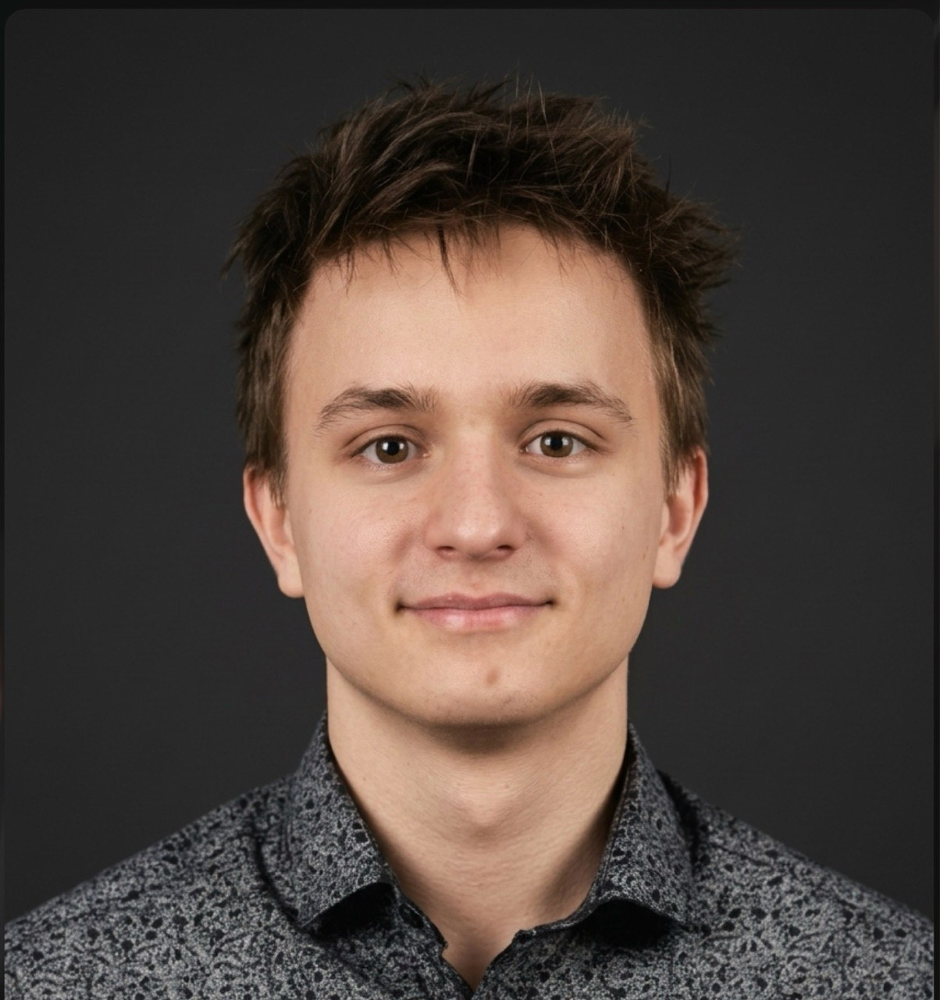
REŽISÉRKamil Štencel
Režisér / Vedoucí projektu
Koordinace projektu, střih a postprodukce.
Připravujeme autorský psychologický snímek a doprovodný dokument, který zkoumá hranice lidského vědomí v izolaci. Projekt se zaměřuje na téma vnitřního rozkladu a subjektivního vnímání reality skrze příběh muže uvězněného v ozvěnách vlastní minulosti.
O projektu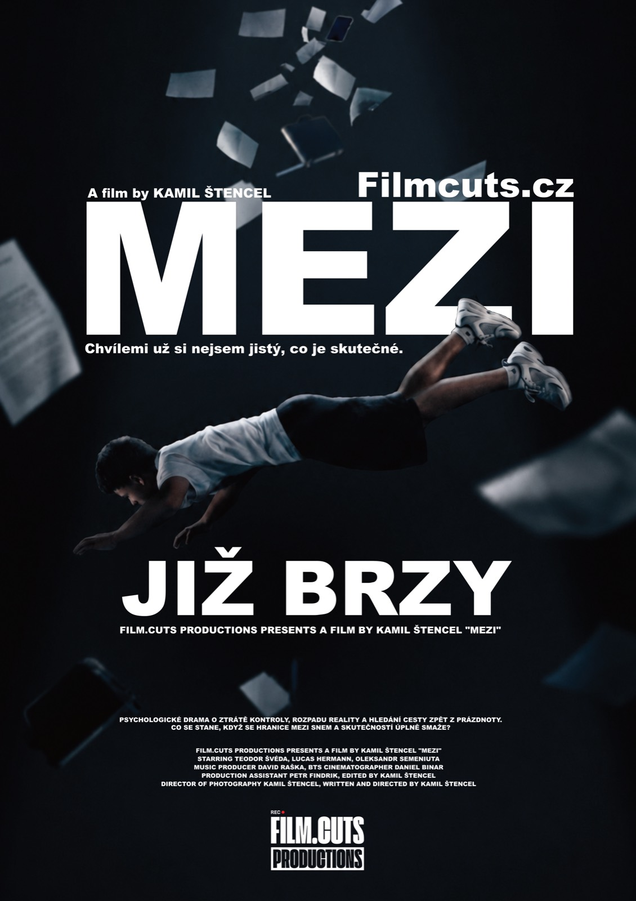
MEZI — Official Trailer (2026)
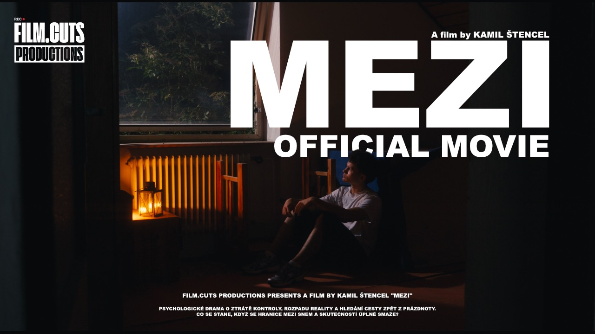
Premiéra: 29. 8. 2026
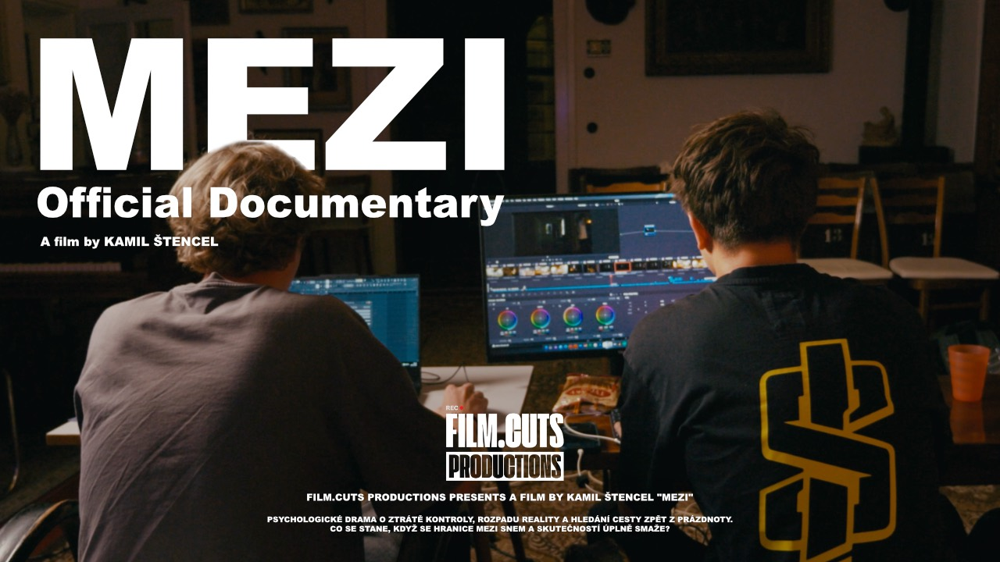
Premiéra: 31. 8. 2026
This film was made possible thanks to the generous support of our backers, sponsors, and community:
Psychologické drama o muži, který se po traumatickém úrazu ocitá v prázdném, rozpadlém městě bez lidí. V doprovodu vlastního dvojníka a tajemné tašky, jejíž obsah odmítá poznat, bloudí mezi troskami reality a vlastními bludy. Snímek zkoumá hranici mezi životem a smrtí skrze ticho, izolaci a nevyhnutelný střet s pravdou, kterou si lidská mysl raději sama vymyslela.
Hlavní milníky projektu (2026)
Detailní rozpis nákladů a aktuální stav financí.
| Vizuální scéna a kulisy(Ateliér + stavba kulis) | 18 000 Kč |
| Lokace a exteriéry(Město + dům + energie) | 10 000 Kč |
| Rekvizity a kostýmy(Zbraně + kostýmy) | 1 500 Kč |
| Technické vybavení(Kamera, světla, mikrofony) | 31 000 Kč |
| Celkem | 60 500 Kč |
Uvedené částky představují kombinaci přímých nákladů a hodnotu vkladu vlastního vybavení.
Z vlastních zdrojů
Gratulujeme! Všechny prostředky jsou zajištěny.
0 Kč chybí
Projekt je připraven k realizaci bez další finanční podpory.
Výběr fotografií: Od scénáře po finální kinematografické pojetí.
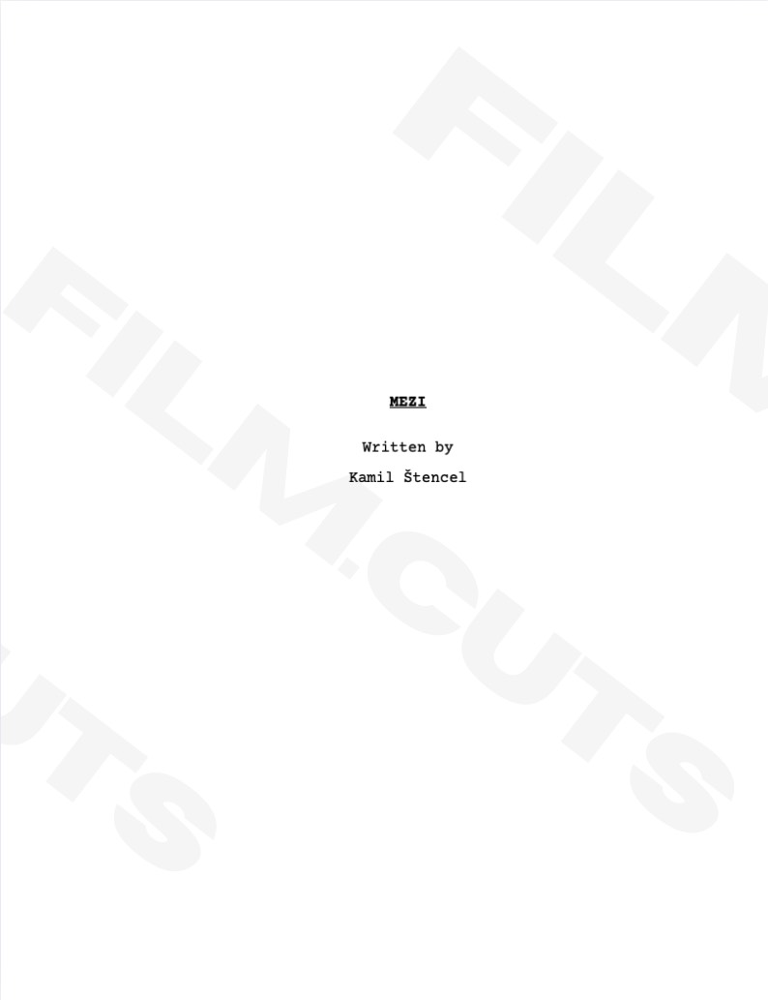
SCÉNÁŘScénářLiterární příprava a dramaturgický základ projektu.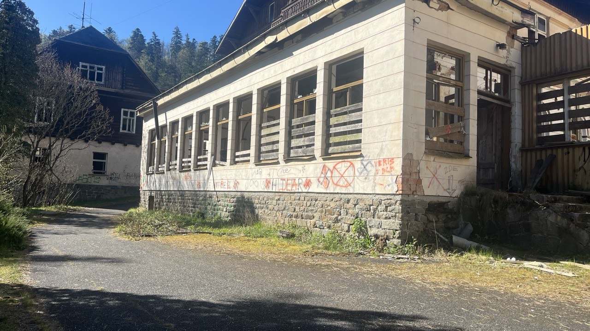
LOKACERozpadlé městoPrůzkum klíčových exteriérů pro zachycení vizuální autenticity a izolace.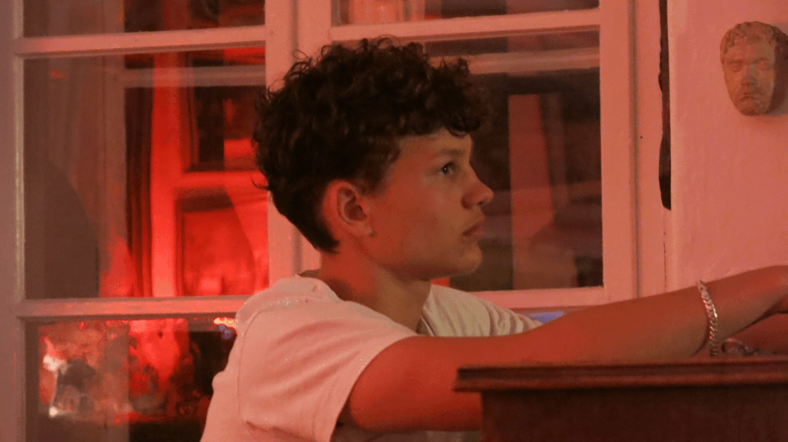
PORTRÉTKinematografický portrétVyužití nízké hladiny osvětlení pro hlubší vykreslení emocí a charakteru postavy.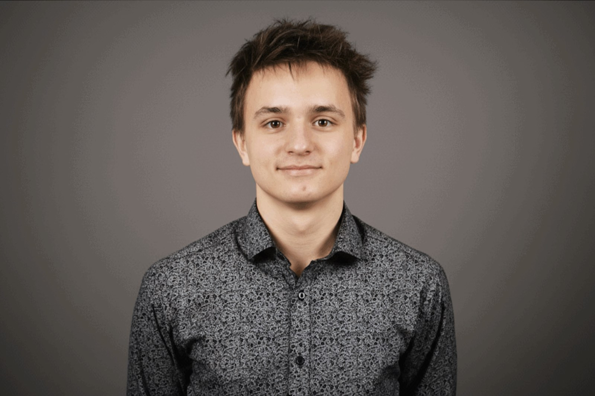
PRODUKCEZa kamerouTým a produkční procesLidé, kteří na projektu pracovali.

REŽISÉRRežisér / Vedoucí projektu
Koordinace projektu, střih a postprodukce.

Kameraman doplňkových záběrů
Kameraman doplňkových záběrů zajišťující vizuální kontinuitu a náběr autentického behind-the-scenes obsahu pro potřeby dokumentu o filmu.
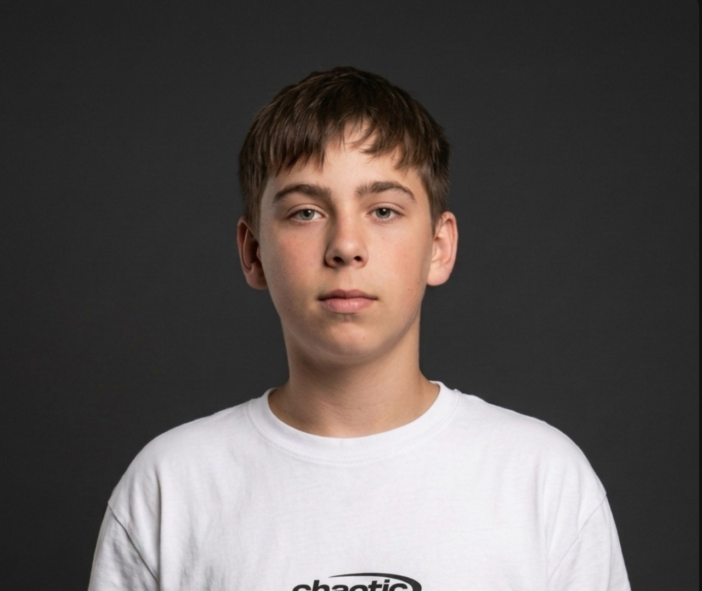
Asistent / Produkční
Stará se o organizační zajištění natáčení a pomáhá s technickými úkoly na place.

Hlavní postava
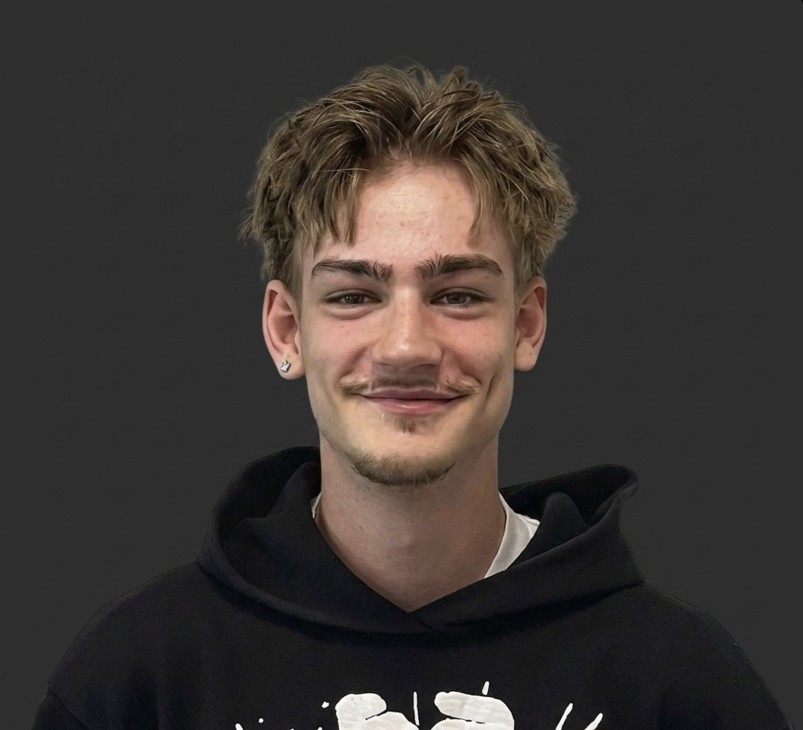
Vedlejší postava
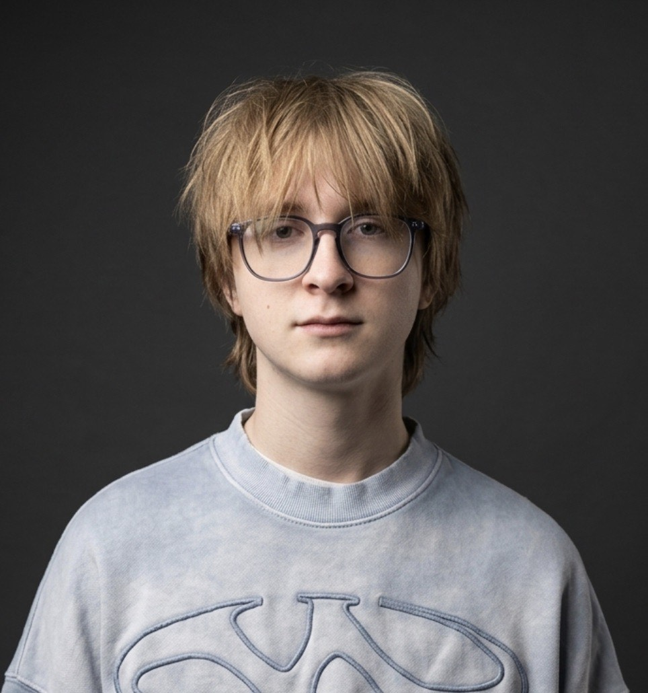
Vedlejší postava